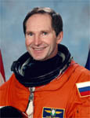

Lyndon B. Johnson Space Center
Houston, Texas 77058
|
National Aeronautics and Space Administration Lyndon B. Johnson Space Center Houston, Texas 77058 |
 |
Biographical Data |
||
Valery Ivanovich Tokarev (Colonel, Russian Air Force)
Test Cosmonaut at the Yuri.A. Gagarin Cosmonaut Training Center
PERSONAL DATA: Born October 29, 1952 in the town of Kap-Yar, Astrakhan Region Resides at Star City, Moscow Region. He is married to Irina Nikolaevna Tokareva, (Gavrilova). They have two children: a daughter, Olya, and a son, Ivan. His mother, Lidiya Nikolaevna (Tokareva), lives in the city of Rostov, Yaroslavl Region. His father, Ivan Pavlovich, died in an auto accident in 1972. Valery Tokarev enjoys tennis, automobiles and airplanes.
EDUCATION: In 1973 he graduated from the Stavropol Higher Military Aviation School of pilots and navigators for Anti-Aircraft Defense. In 1993 he graduated from Gagarin Military Aviation Academy. In 1997 he graduated with a Master's degree in State Administration from the National Economy Academy affiliated with the Russian Federation President’s Administration.
AWARDS: Awarded the title “Hero of the Russian Federation” as well as other orders and medals of Russia.
EXPERIENCE: From 1973 to 1976 Tokarev served in military units of the Air Force as pilot, senior pilot, flight leader, and deputy flight squadron-leader. In 1981-1982 he studied in the Test Pilot Training center affiliated with Chkalov State Research Test Institute. He became familiar with 46 types of aiorcraft and has logged over 3000 flight hours.
Tokarev is a first class military pilot and a first class test pilot, and has gained proficiency and flight experience with 44 types of airplanes and helicopters. He has participated in tests of fourth-generation carrier-based aircraft and vertical/short takeoff and landing jets (SU-27K, Mig-29K, Yak-38M, SU-25UTG), as well as bomber and missile navy fleet jets (SU-24M).
From March 1989 to March 1991 Tokarev attended and passed a general training program at the Gagarin Cosmonaut Training Center (GCTC).
In 1993 he has he was selected in a test-cosmonaut group which trained for missions on the Buran reusable spacecraft. He was assigned in GCTC cosmonaut corps in 1997 and started training for space flight.
From February to October 1998, he served as representative of Gagarin GCTC at the Johnson Space Center in Houston.
From January to May 1999 Tokarev trained at the Johnson Space Center for mission STS-96 to the International Space Station (ISS).
Tokarev flew on STS-96 (mission 2A.1) from May 27 to June 6, 1999. During the 10-day mission, the crew of Discovery delivered 4 tons of logistics and supplies to the International Space Station in preparation for the arrival of the first crew to live on the station. The mission was accomplished in 153 Earth orbits, traveling 4 million miles in 235 hours and 13 minutes.
From May 1999 Tokarev trained as commander of the backup crew for cargo spacecraft changing in the ISS.
From August 2001 to March 2003 he trained as flight engineer of the Expedition-8 mission to the ISS.
From March 2003 Tokarev training as commander of the backup crew for Expedition-8 and visiting Expedition-5 crews.
During 2004 he trained as ISS flight engineer and commander the Soyuz- TMA spacecraft for the back-up crew to the Expedition-10 mission to the ISS.
Expedition 12 (Sep 30, 2005 – Apr 8, 2006). Tokarev was the Soyuz Commander and Flight Engineer 1 on the Expedition-12 crew which launched from the Baikonur Cosmodrome in Kazakhstan on September 30, 2005 aboard a Soyuz TMA spacecraft and docked with the space station on October 3, 2005. During a six month tour of duty aboard the International Space Station, the crew conducted two spacewalks and relocated their Soyuz spacecraft twice, becoming the first ISS crew to dock to every Russian docking port on the complex. They also became the first two-person crew to conduct a spacewalk in both Russian and U.S. spacesuits. The mission was accomplished in 189 days, 19 hours and 53 minutes, and included 11 hours and 05 minutes of EVA.
APRIL 2006